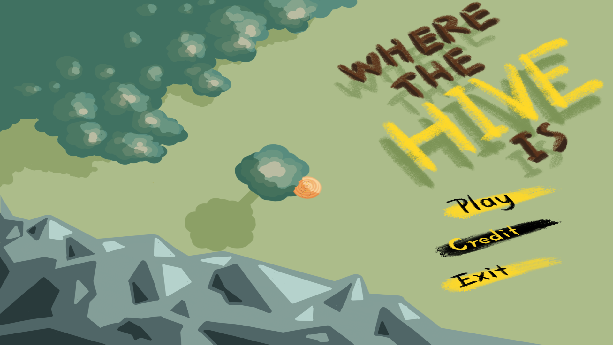
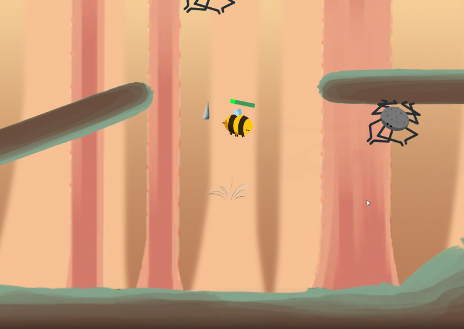
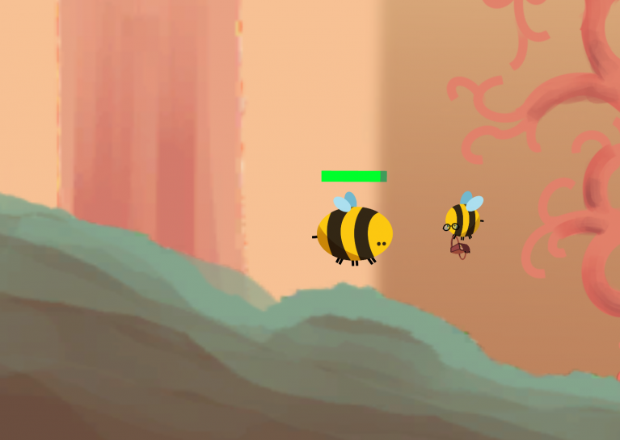
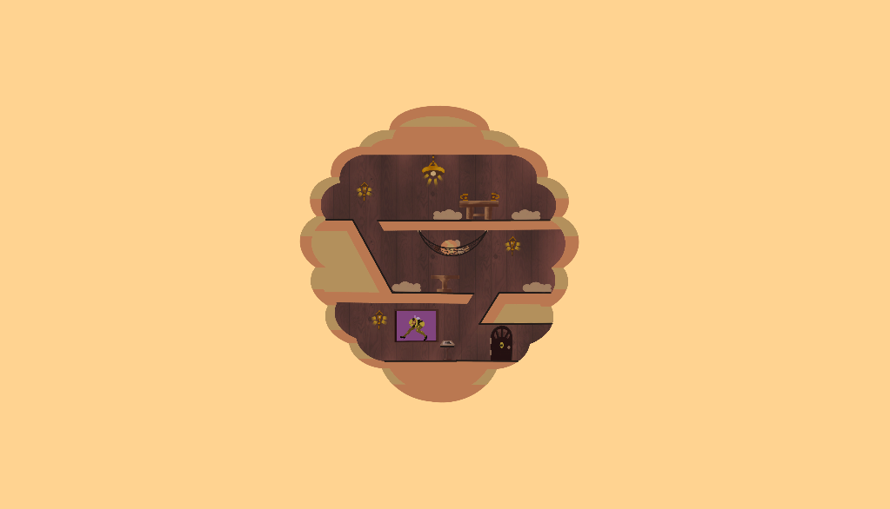
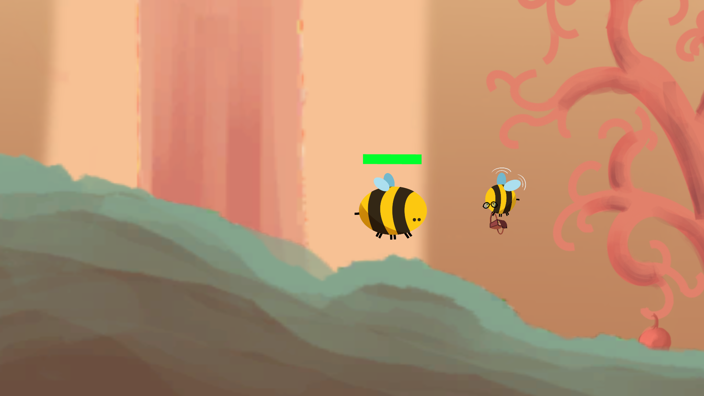
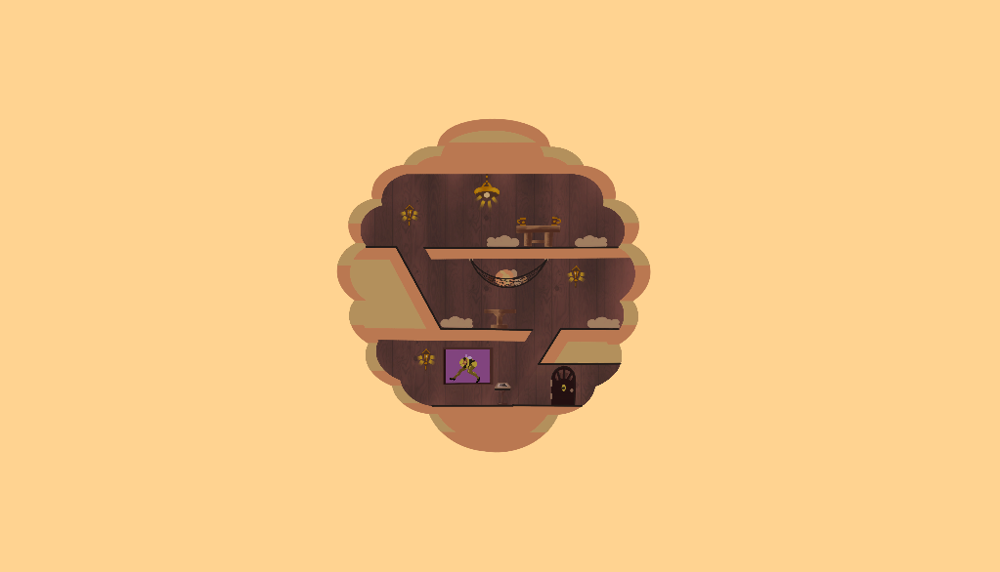
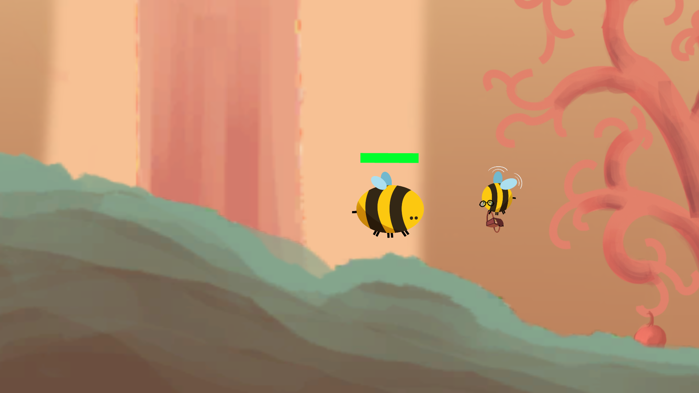

Where The Hive Is
Where The Hive Is was a game I participated making in during the 2019 Global Game Jam. The game itself is a simple platformer, where you play as a bee that has to dodge around obstacles such as enemies and traps.
The objective of the game is to collect your bee friends, as the theme for the Jam was 'What does home mean to you?' and our group agreed that friends and family represent home rather than a physical location. We wanted to incorporate this by each time you collect a bee friend, they'd return to the hive and add a customized feature to it. At the end of the game, the hive would get destroyed but your bee friends would survive!
I was a generalized programmer in the group, coding things such as health, damage and enemy animations specifically. I also acted as one of the focal designers, helping make quick decisions on what to include or exclude in the game with our short time frame. This game was created in the Unity Engine 2019.
Credits:
Erek Yousan Xue - Art Design.
David Erick Ramos- Music/Sound Design.
Dominick Tamras- Designer/Programmer.
Ziqian Pei - Designer/Programmer.
Jamie Xiaochao Gao- Designer/Programmer.
Daniel Jihyung Son- Designer/Programmer
Download (PC)   


